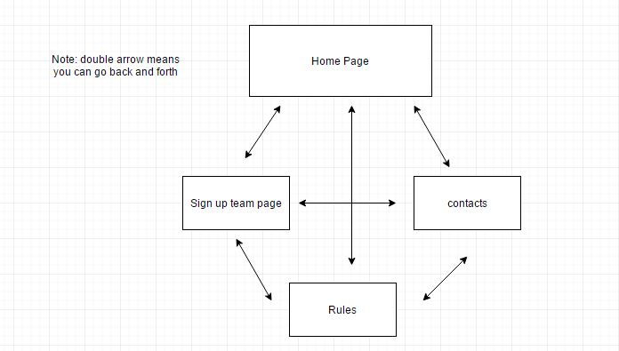

CP1406 - Assignment 1 - Project Plan
Name: Peter Pannam, StudentNumber: 133224406
Goals:
The goal of this new website is to increase the amount of customers Slammers Beach VolleyBall recieves by at least fifty percent.
Success Evaluation:
Since Slammers Beach VolleyBall recieces around 100 customers on a weekly basis, the website will be defined a success if over the course of a week the company receives
150 customers or more.
Target Audience
The main target demographic that the new Slammers Beach Volley Ball website is aimed are young families. But with children between the ages 15 and 18,
This demographic will be targeted by giving the website vibrant colours to appeal to younger audiences, but with a smooth desigin to make it easy for parents to navigate the site
Site Flowchart

GitHub Repository
https://github.com/peterpannam/a1